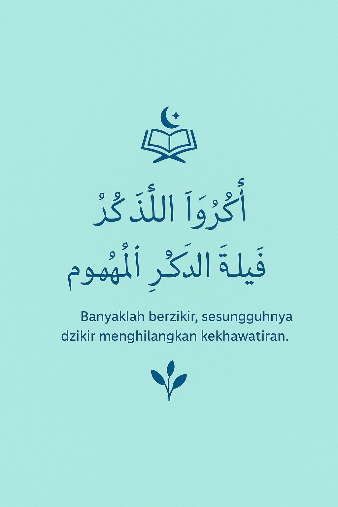

Penghitung Dzikir
Membantu berdzikir dengan lebih mudah dan teratur
Assalamu’alaikum warahmatullahi wabarakatuh. Website ini dibuat untuk membantu kita dalam melaksanakan dzikir tanpa perlu menghitung manual dengan jari atau tasbih.
Dengan tampilan sederhana, insyaAllah manfaatnya besar. Semoga ibadah kita lebih khusyuk dan praktis.

Penghitung Dzikir
Sebuah proyek web sederhana untuk membantu ibadah harian Dibuat oleh Mahasiswa Informatika